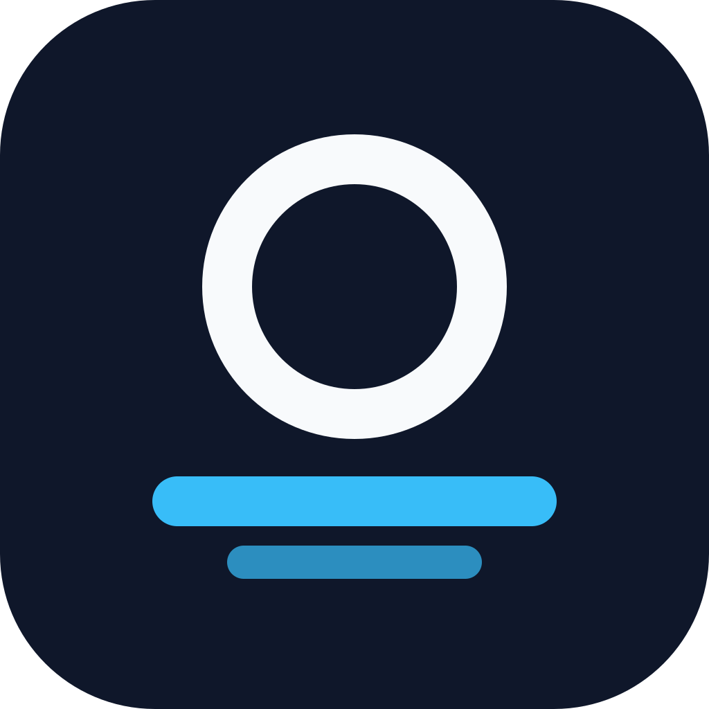
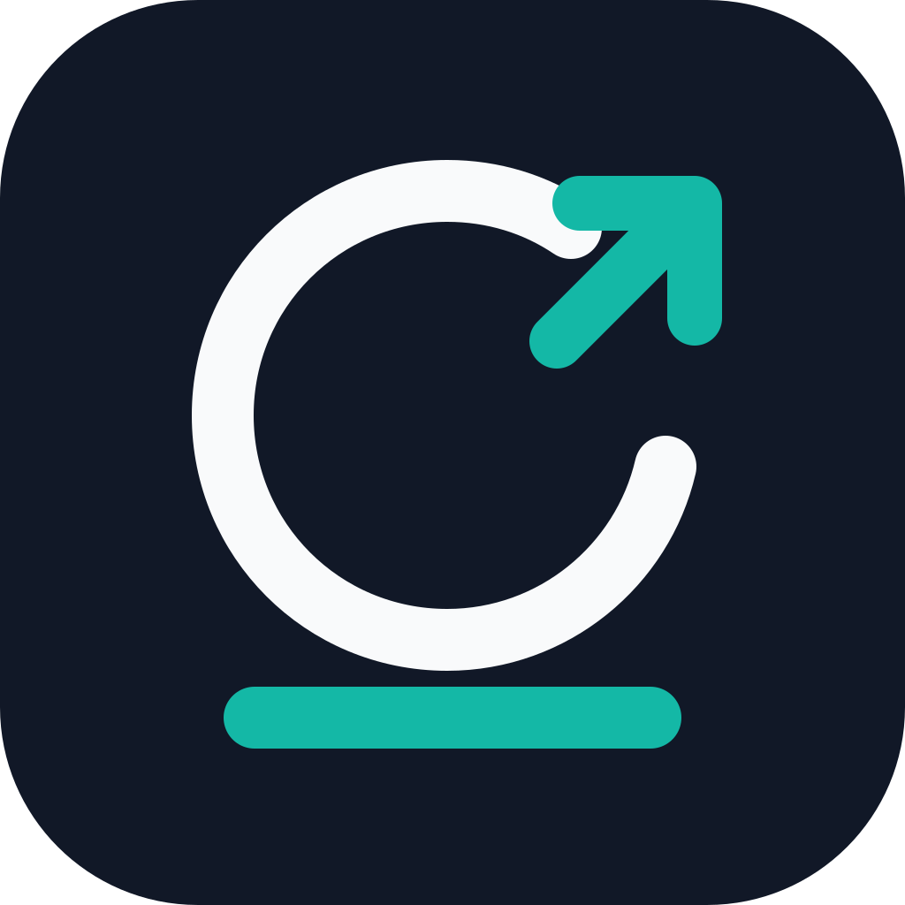
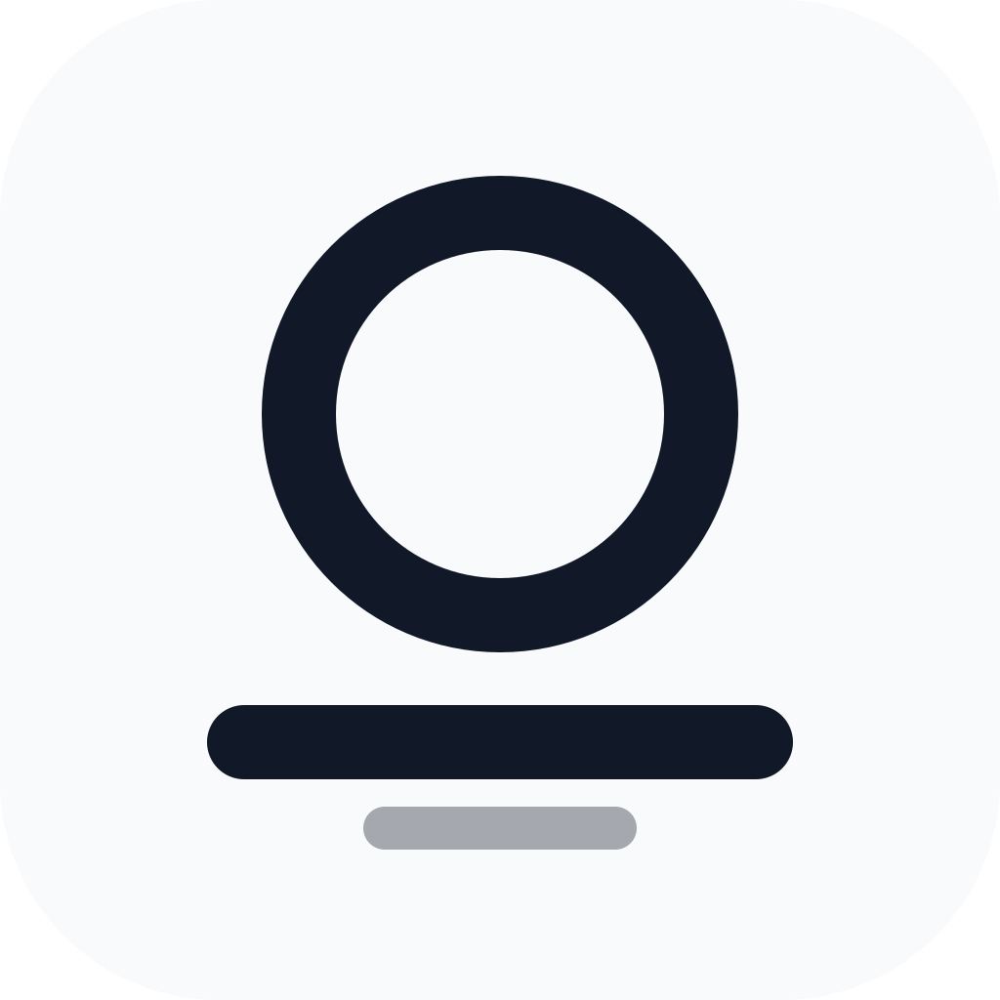
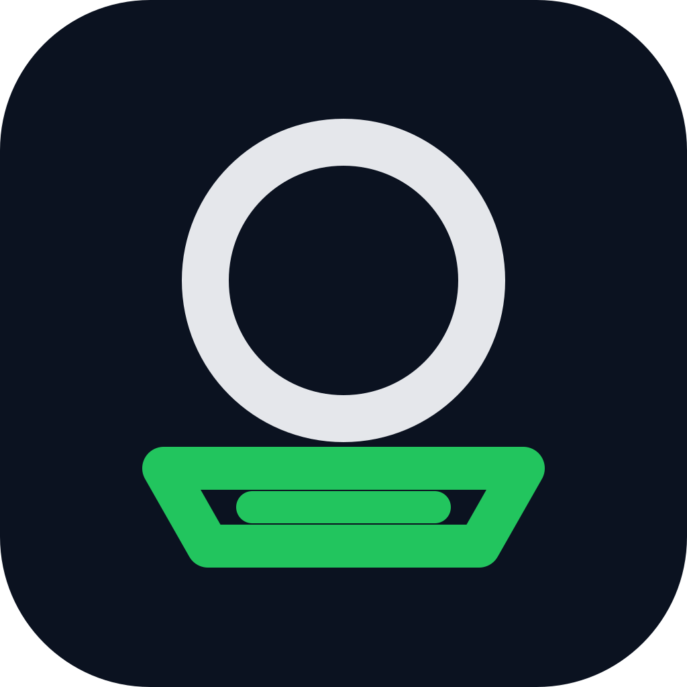
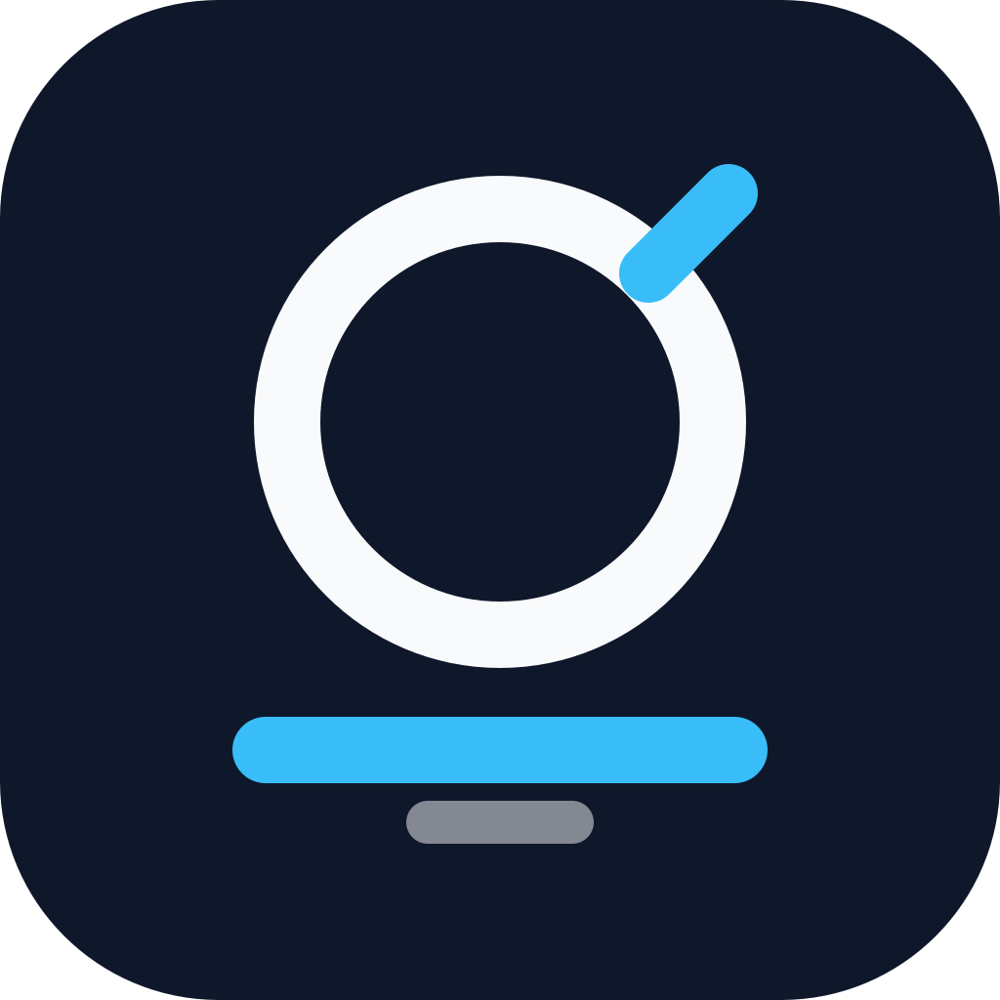

V1 Balanced
最稳妥的 O + Dock，适合正式 App 图标。

V2 Open Gap
右上角打开动作更明显，强调启动和跳转。

V3 Minimal
浅色、极简、高对比，适合文档和品牌展示。

V4 Dock Tray
底座更像托盘，集合/收纳语义更强。

V5 Brand Mark
更品牌化，保留打开缺口但不直接画箭头。

最稳妥的 O + Dock，适合正式 App 图标。

右上角打开动作更明显，强调启动和跳转。

浅色、极简、高对比，适合文档和品牌展示。

底座更像托盘，集合/收纳语义更强。

更品牌化，保留打开缺口但不直接画箭头。